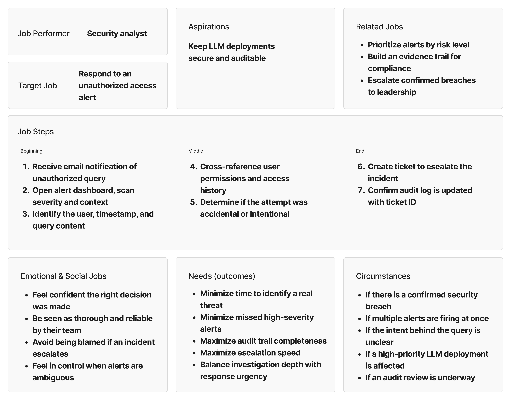

01
Project overview
When Opsin Security began its journey to help enterprises adopt GenAI securely, the team needed more than a concept. They needed a clear, functional vision that could show investors what was possible.
I joined Opsin in its early startup phase to design the foundation of its Security Management Interface. Working closely with the founders and engineers, I helped translate complex ideas about AI data protection into a tangible, user-centered product experience.
Together, we created Opsin’s first end-to-end prototype, a system that visualized GenAI activity, prioritized real risks, and made remediation intuitive. This early design became a cornerstone for investor presentations and product demos, helping Opsin communicate its value and raise $7M seed funding.
Through this process, I learned how design can bring clarity and momentum to an emerging product vision, turning technical innovation into something investors and users can immediately understand.
02
Problem & goal
Problem
LLM deployments face data privacy and compliance risks due to insufficient access controls and monitoring.
Goal
Demonstrate how Opsin Security enhances LLM data protection through real-time access control, validation, and monitoring across security services.
03
Use case: query & authorization
Opsin's founders first walked me through their use cases verbally, in conversation rather than documentation. Before designing anything, I turned that explanation into a visual flow so all three of us could point at the same picture.
The first use case follows a user who asks for another customer's tax information. Before anything is returned, the request has to pass two checkpoints: does the user have valid credentials, and do they have permission to access this specific data? Only when both are true is the data returned; failing either one blocks the request.
Laying it out made every decision point explicit, gave the founders something concrete to react to, and surfaced the moment that matters most for the product: a denied request is exactly what a security analyst later has to investigate.
04
Jobs-to-be-done
With the use cases mapped, I chose to frame the problem space using a Jobs-to-be-Done framework before jumping into design. Rather than documenting what the system does, JTBD helped me focus on what the security analyst is actually trying to accomplish — and the circumstances, pressures, and emotional stakes that shape how they work. This grounded decisions like alert prioritization and audit traceability in real analyst needs, not just technical requirements.

05
Wireframes
To get stakeholder sign-off before moving into high-fidelity, I created low-fidelity wireframes in Axure RP, chosen for its ability to simulate complex, dynamic interactions quickly. I focused on three core flows: the Dashboard (security overview), AI Model Policies (LLM access and compliance rules), and Audit Log (tracking unauthorized access). These wireframes were intentionally directional, just enough to validate the core user journeys and align on product direction before investing in visual design.
06
High-fidelity design
Moving into high-fidelity in Figma, the core design challenge was simplicity under pressure. Since users are performing high-stakes security tasks, every screen needed to minimize cognitive load and surface only what mattered. I designed six screens across two main flows: creating a ticket for a flagged alert, and managing AI monitor policies across platforms.
A key interaction pattern throughout was the use of overlays for quick actions like ticket creation and alert analysis, keeping users in context without losing their place. Working within the provided brand guidelines, the visual direction stayed clean and minimal, letting the data and actions speak for themselves.
07
Business impact
$7M
Secured $7M in seed funding
The prototype was used directly in investor pitches, helping the team communicate the product vision and secure their initial round.
As the sole UX designer during Opsin's early startup phase, I helped transform a complex GenAI security concept into an investor-ready prototype that directly contributed to the company's first seed raise.
Key outcomes
-
Established the design foundation for a 0→1 product
Defined Opsin's first end-to-end experience: the information architecture, core flows and screens that gave the founders a shared reference to build from.
-
Made complex security data accessible
Simplified dense cybersecurity workflows into a clean, minimal interface, making the product approachable for both technical and non-technical enterprise users.
-
Delivered under intense timeline pressure
Took the product from concept to investor-ready prototype in 4 months as the sole designer, balancing speed with design quality.
08
Learnings
-
01
Jobs-to-be-done over personas
Designing for operator workflows in a high-stakes security context showed me that what someone needs to accomplish matters more than who they are.
-
02
Domain fluency unlocks better design
Learning core cybersecurity concepts directly shaped how I structured information hierarchy and task flows, not just my vocabulary.
-
03
A shared design system from day one
Working without one created handoff friction; in future 0→1 projects I'd establish reusable components before diving into screens.